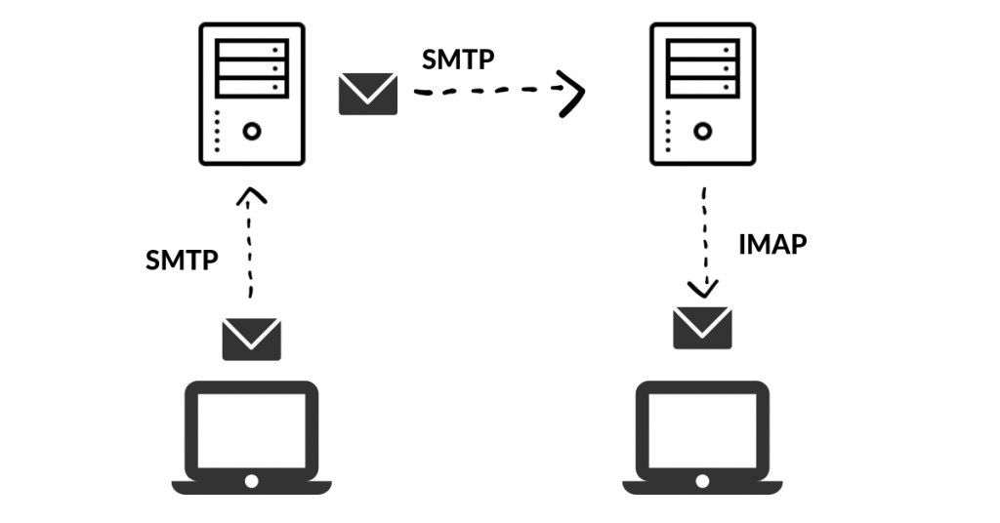

BytesOfProgress
Wiki
SMTP - Simple Mail Transfer Protocol
SMTP, or Simple Mail Transfer Protocol, is a communication protocol used for the transmission of electronic mail (email) on the internet. It operates on Port 25 or, for secure connections, port 587. of the TCP/IP protocol. Here is a technical breakdown:
The SMTP transaction begins with the client (sending server) establishing a Transmission Control Protocol (TCP) connection with the destination server on port 25, the default port for SMTP. A three-step handshake ensues to synchronize and confirm the connection. Once established, the client introduces itself using the "HELO" or "EHLO" command, signaling the start of the SMTP conversation.
Sender and recipient information is exchanged through the "MAIL FROM" and "RCPT TO" commands, respectively. These commands convey the source and destination email addresses. Following recipient validation, the client issues the "DATA" command, initiating the transfer of the email message.
Once recipient validation is confirmed, the client issues the "DATA" command, signaling the start of the data transfer phase. The actual email message, conforming to MIME standards, is transmitted.
The MIME standard ensures a consistent format for email messages, encompassing headers such as "From," "To," "Subject," and the message body. MIME supports the inclusion of attachments and multimedia content.
SMTPS (SMTP over TLS / SSL)
Secure SMTP, often facilitated through the STARTTLS extension, initiates a connection on port 587 instead of the traditional port 25. This distinction is crucial for enhanced security in email transmission.
The client signals the initiation of a secure connection using the "EHLO" command. This command serves a dual purpose by introducing the client and negotiating the use of encryption through the STARTTLS extension.
The client issues the "STARTTLS" command to the server, expressing the intent to upgrade the existing connection to a secure, encrypted channel. This command triggers the negotiation process for Transport Layer Security (TLS) or Secure Sockets Layer (SSL).
Upon receiving the "STARTTLS" command, the server responds, and both servers engage in an encryption handshake. This involves the exchange of cryptographic parameters to establish a secure communication channel.
After the successful encryption handshake, the SMTP commands and responses, including sender and recipient specifications and actual message data transfer, occur within the the secured channel. This protects sensitive email content from unauthorized access.
As with standard SMTP, the client concludes the email transmission with a dot (.) on a line by itself. The server responds with a status code, indicating the result of the message transfer. Then, the client issues the "QUIT" command to terminate the SMTP session, and the connection is closed.
back